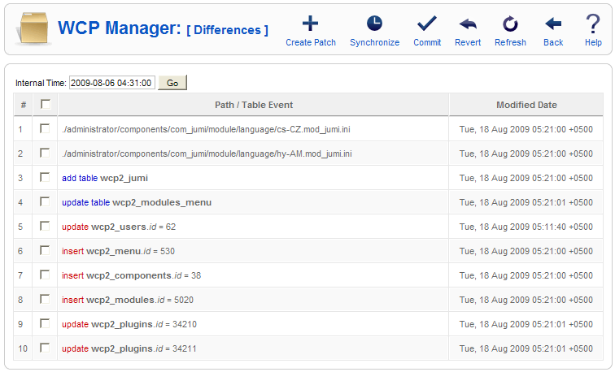

| Working Copy |
Description
On this page you will be doing the main operations of the working copy. The list shows made changes on the child site. The screenshot below is taken after Jumi installation, I commited almost all the files in purpose that this list will be short.
Screenshot

Column Headers
#. An indexing number automatically assigned by Joomla! for ease of reference. Checkbox. Check this box to select one or more items. To select all items, check the box in the column heading. After one or more boxes are checked, click a toolbar button to take an action on the selected item or items. Path / Table Event. This column will contain the relative file path, the table, or the table row which was changed. Modified Date. The date time when the change was made.
Toolbar
At the top right you will see the toolbar:
Create Patch. Select one or more items and click this button to create a patch package which after you need to apply to the master site. Synchronize. If you need the child site to be up to date with the master website, you can use this button to synchronize the child site with the master, the made changes will stay intact. Commit. Select one or more items and click on this button to commit the change to the master. Revert. Select one or more items and click on this button to revert the selected changes to the master state. Refresh. If the list is out of date you need to click on this button to regenerate the list. Back. Click on it and it will get you back to the child list. Help. Opens this Help Screen.
Quick Tips
Related Information
|